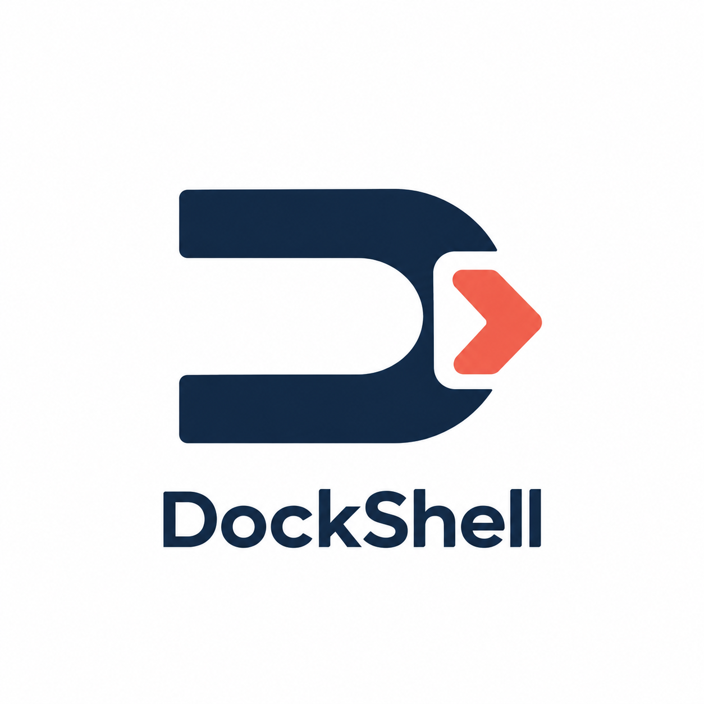
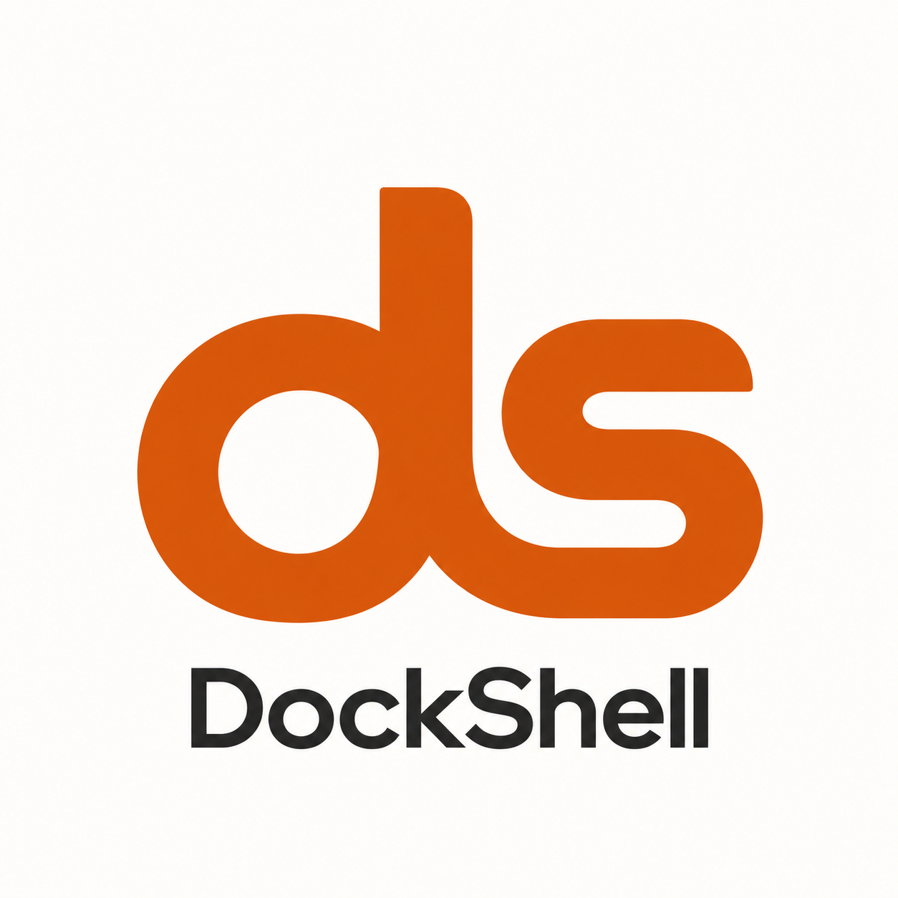
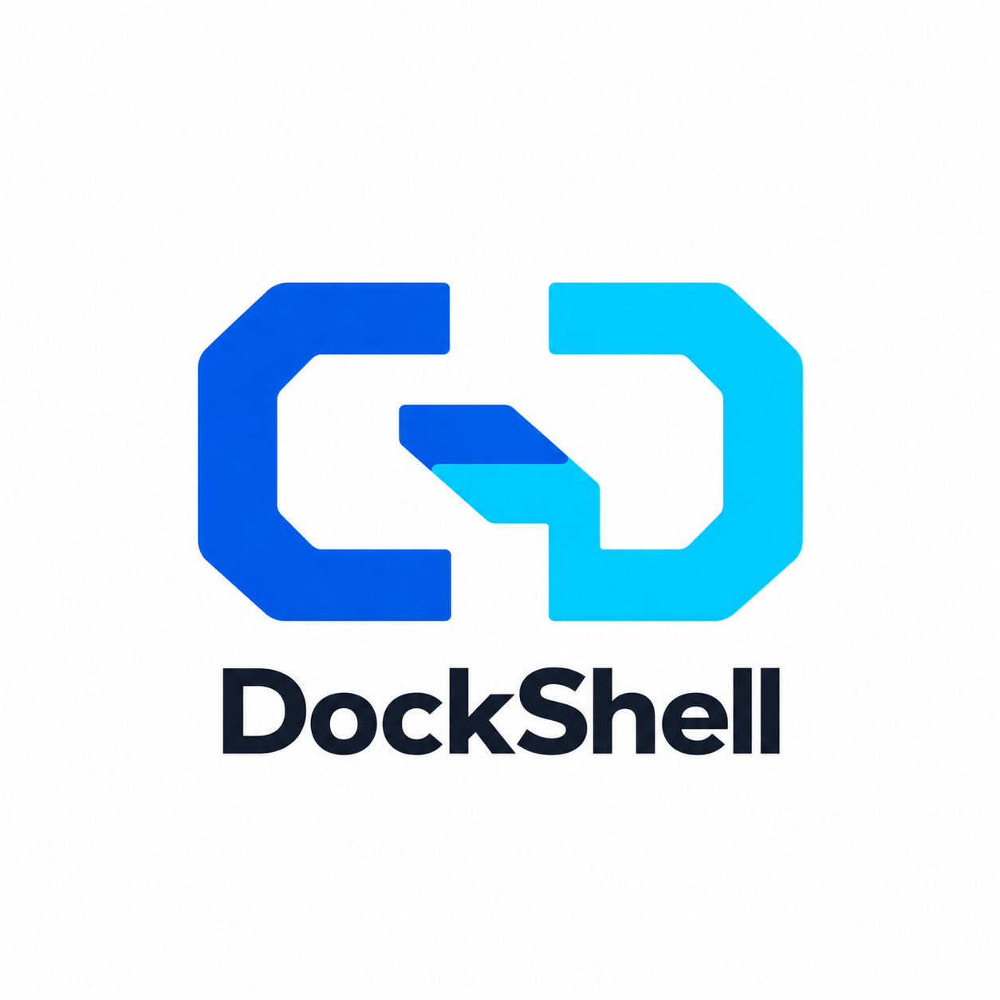
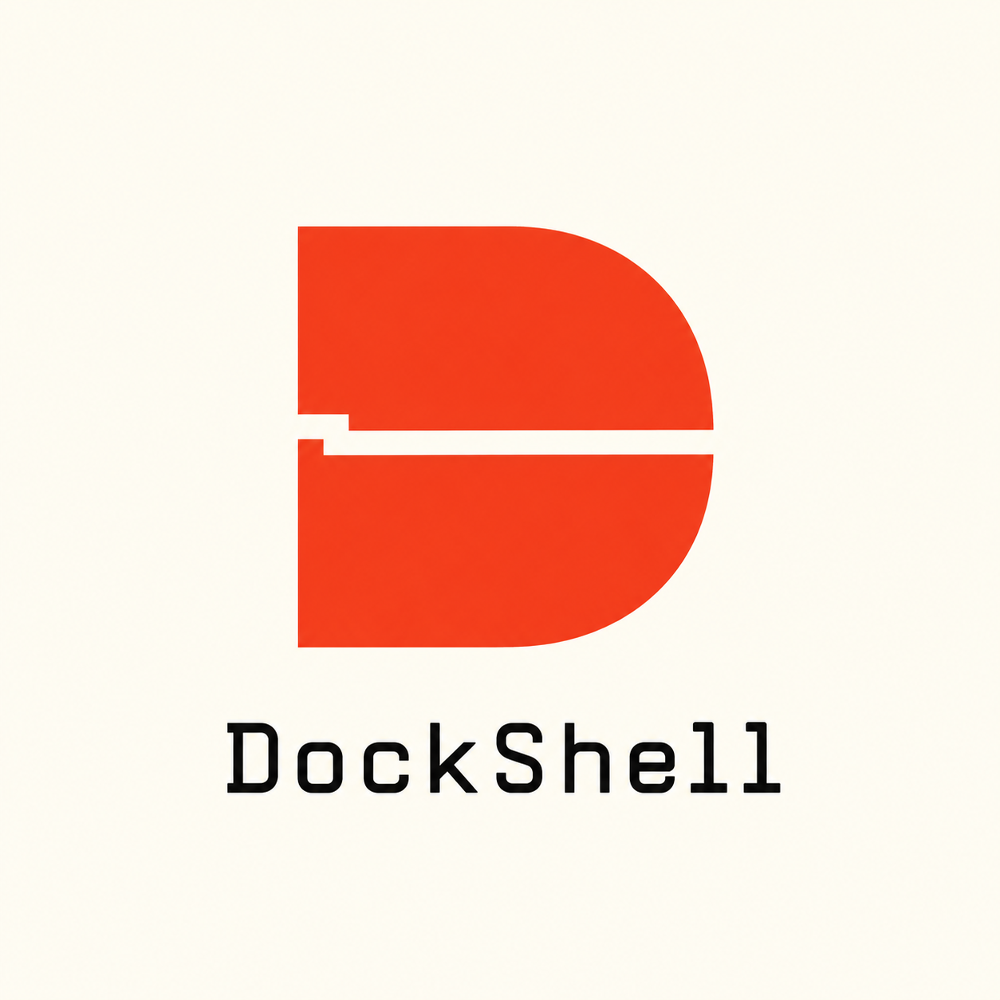
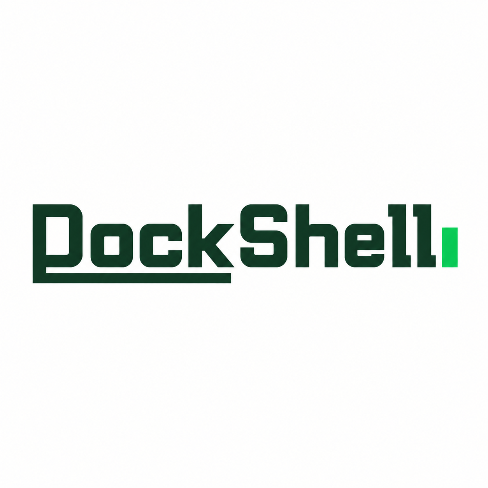
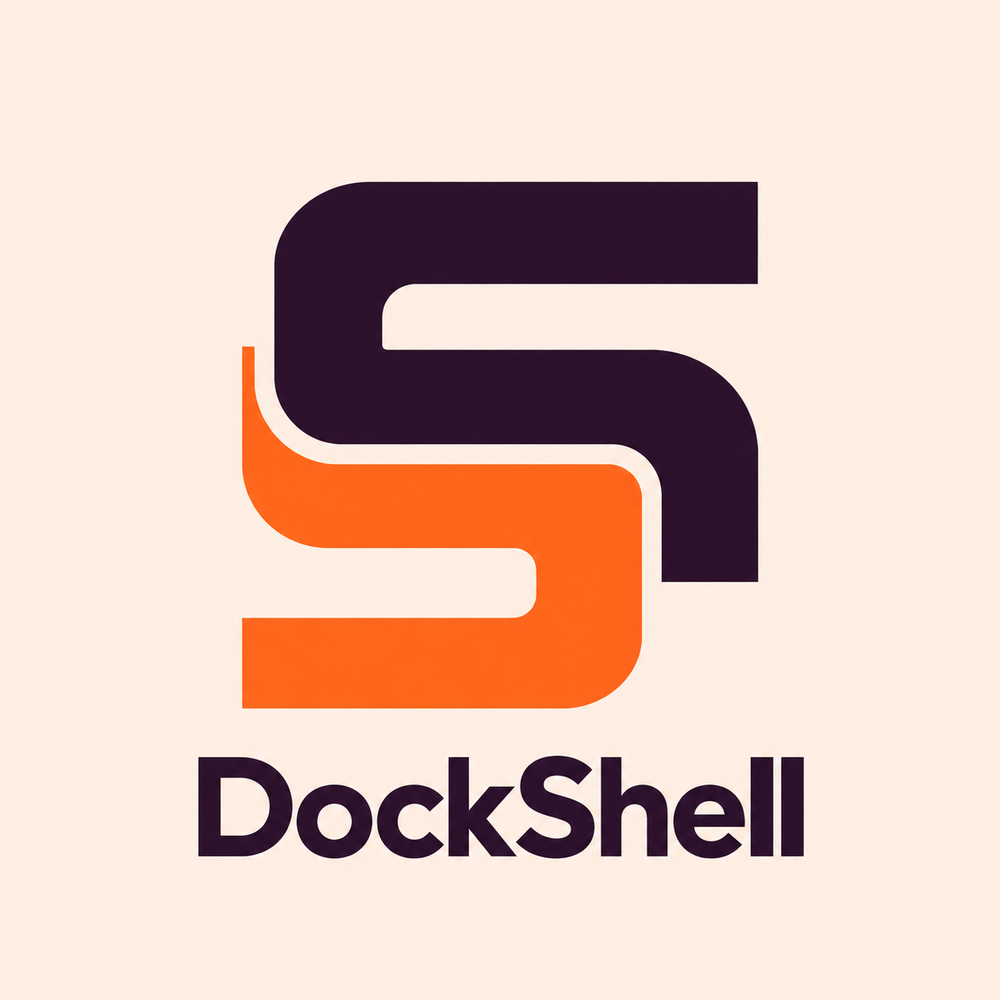
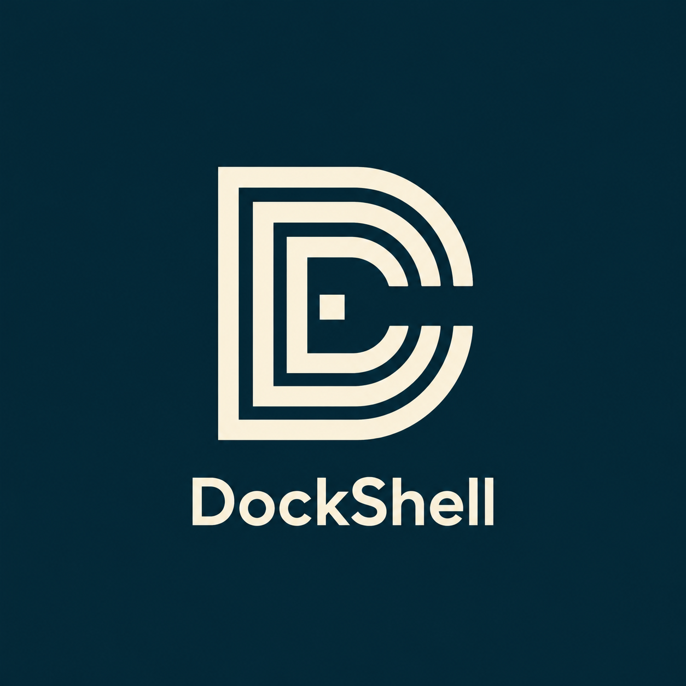
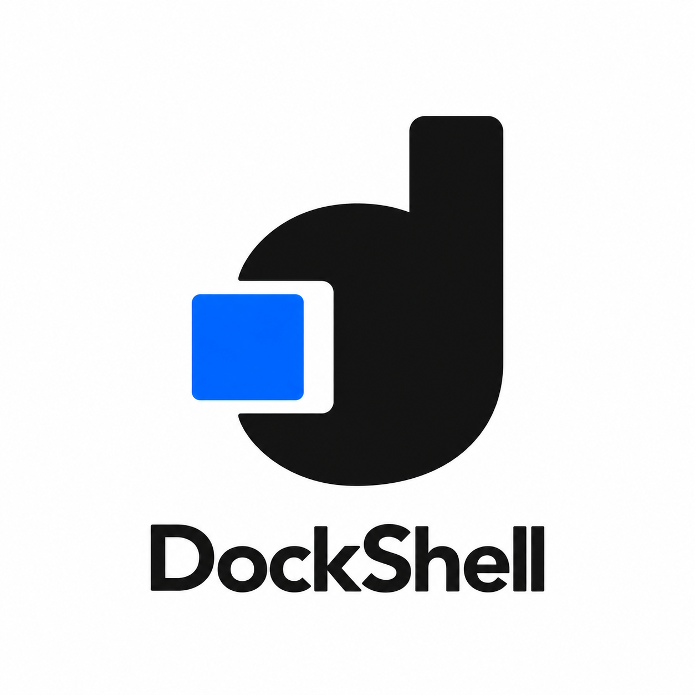

DOCKSHELL / NAME × FUNCTION
名字与功能 · 21–30
Dock：停靠、连接、会话归位。Shell：命令、光标、远程终端。
每款只选择一个重点，把名字或已有功能融入图形。点击图片查看原图。
















DOCKSHELL / NAME × FUNCTION
Dock：停靠、连接、会话归位。Shell：命令、光标、远程终端。
每款只选择一个重点，把名字或已有功能融入图形。点击图片查看原图。







